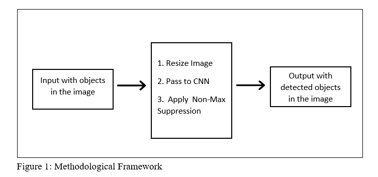

Artificial Intelligence and Urban Planning:
Automated Traffic Volume Counts using Object Detection and Deep Machine LearningPrepared by:
Victor E. Irekponor
150503006
Overview and Problem Statement
Urban AI : Where AI and Urban Planning Intersects
- Big data - 90% via social media check-ins and sensors
- 4th Industrial (INDUSTRY 4.0)
- Recent advancement in computational technology
-
All of these have impacted Urban Planning research and Smart cities massively; causing a paradigm shift from the status quo to how it could help make our lives and jobs easier as urban Planners in the built environment
-
Traffic volume counts (TVC) are simply referred to as an activity that involves counting the number of vehicles passing through a road per unit time
-
Usually precedes transportation decision in any jurisdiction
-
The methods for carrying out traffic volume studies are broadly classified into two namely Automatic , and Manual
It is worthy to note that traffic surveys could be used to collect a host of other data types, these includes:
- Speed Surveys
- Classification counts
- Turning Movement
- License plate surveys
- Multi-lane classification
- Pedestrian surveys, et cetera
Relevance of Traffic Surveys
-
Traffic volume studies also known as traffic counts are significantly used for the planning and designing of new transportation infrastructures.
- Traffic volume studies are conducted to understand and analyze traffic patterns and trends.
- Traffic volume studies are used in traffic operation, and in the planning and control of existing facilities.
- Traffic volume studies are also useful for identifying and classifying the various types of vehicles using the road.
Wua et al (2019) asserts that computer vision is a vast field comprising several fundamental visual recognition and classification problems. Some of which includes:
-
Image Classification
- Image Instance Segmentation
- Semantic Segmentation
- Object Detection
- Image Reconstruction
According to Mandal (2020) popular object detection frameworks include:
-
Region based Convolutional neural network (R-CNN)
- Faster Regional based Convolutional neural networks (Faster R-CNN)
- Mask R-CNN
- You Only Look Once (YOLO)
- Single shot detectors (SSDs) among others.
Methodological Framework
- YOLO is used to look at an image to predict what objects are present and where they are. It processes streaming video in real-time with less than 25 milliseconds of latency.
- SORT algorithm was also used primarily to track objects in the video feed.
-
YOLO Algorithm was preferred in the methodology because of the advantage it posesses over classificaion based computer vision systems
-
It considers the whole image at once and makes its predictions by considering the global contents of the image
-
It makes predictions with only one network compared to R-CNN which needs thousands for only a single frame.
-
This evaluation makes it extremely faster comparatively i.e 1000 times of R-CNN as well as 100 times of Fast R-CNN (Shekade et al., 2020).
Project Structure
- The Project consists of three directories and two Python scripts, the directories in order of importance are:
- yolo-coco/ : The YOLOV3 object detector pretrained (on the COCO dataset) model files. These were trained by the Darknet team.
- Input/ : This folder contains a sample video file which we would perform object detection on for testing and evaluation purposes.
- Output/ : Output videos and frames that have been processed by YOLO and annotated with bounding boxes and class names can go in this folder.
-
Then there are two python scripts in the project directory;
main.py
sort.py
they contain the command line argument parsers and the tracking code respectively.
Procedures for using the System
The following are step by step procedures for running the algorithm that automatically counts vehicles from traffic surveillance video streams:
- Install any version of the Python software greater than 3.5
- Download or git-clone the codes from the github repository to your local machine using this link
- Unzip the downloaded file
- Navigate to the unzipped folder
- While inside the unzipped folder, navigate to the traffic counter folder and open a command prompt right in that same folder
-
Run the following command below from terminal or command prompt
python main.py --input input/input_video.mp4 --output/output_video.avi --yolo yolo-coco
- This package was optimized to work more efficiently and seamlessly on both Windows Command prompt (CMD), and on UNIX Terminal
- it typically takes a few minutes to process the input video. The time taken depends on size of the video and the computational strength of the computer used to run the codes
Conclusion & Recomendation
- Acquisition of reliable vehicle counts and classification data is necessary to establish an enriched information platform and improve the quality of ITS.
- The goal of the project is to try to eliminate the complexity of carrying out traffic volume counts by town planners which is done manually at present
- This standalone tool can eradicate the time complexity for planners resulting from the manual counting of vehicles which will in turn save a significant amount of money and man power.
- Also, this AI system can be improved upon to work with real-time streaming video data